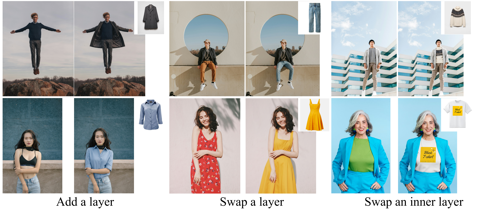

Abstract
In the real world, fashion is about layering: adding a jacket over a shirt, or a sequence of adding and removing layers, rather than just a single-layer swap. This fundamental real-world task remains a challenge in existing Virtual Try-On (VTON) methods, which excel at single-layer replacement but are not designed to layer or de-layer an existing outfit. This paper proposes Layering Virtual Try-On (LVTON), a layering benchmark and method that preserves an existing outfit while enabling sequential layering.
Our key insight is that the LVTON challenge must be disentangled into two distinct competencies: (1) General VTON Priors and (2) Specific Layering Knowledge. First, our model obtains general VTON priors by being trained on data produced by an automatic data generation pipeline. Second, the model is fine-tuned on a small, dedicated LVTON dataset to learn the layering logic. Our method achieves state-of-the-art results on our LVTON benchmark and demonstrates superior generalizability.
Our Two-Stage Pipeline

Our method disentangles the LVTON task into two stages. The first stage builds general VTON priors by synthesizing mask-free, pose-mismatched training pairs from videos. The second stage uses a small, real-world layering dataset to teach the model specific layering knowledge (e.g., "add", "swap", "remove") alongside a novel temporal reversal augmentation technique.
Qualitative Results
Layering Virtual Try-On Results

Our method successfully composites the target garment while preserving the inner layer. Baselines often erase inner details or introduce artifacts.
In-the-wild Generalization

Our model successfully generalizes to complex, out-of-distribution scenarios sourced from the internet, accurately executing instructions like "add," "swap," and inner-layer swaps.